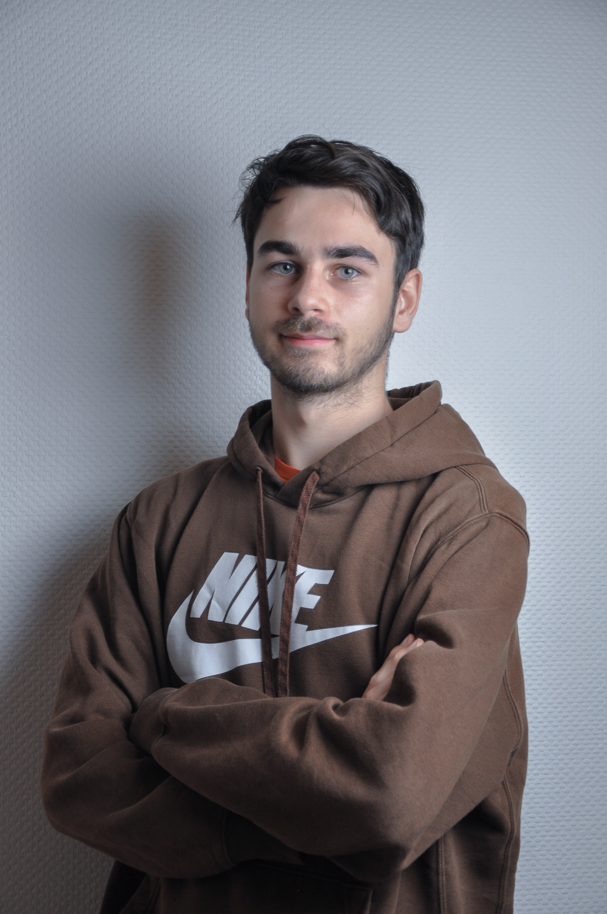

Profile

Evann
Fourth-year engineering student at Epitech, with a study year abroad in Indonesia and a completed internship in industrial software.
- Education
- Epitech, G7 cohort, fourth year of the engineering program. Previously at Lycée Nicolas Appert.
- Abroad
- A year at Institut Teknologi Sepuluh Nopember (ITS) in Surabaya, Indonesia, following a computer science track.
- Past internship
-
Software intern at Kelias, a road-signage company in Saint-Herblain, France, working on:
Reception - a mobile app used on the shop floor.
VisioCharge - a production-scheduling dashboard for planning work across the factory. - Goal
- To become an application developer, building the kind of software that people actually use every day at work.
A bit more context
The internship at Kelias is what shaped this goal: both projects existed to make everyday work simpler, one put information in the hands of people on the floor, the other kept a production schedule readable at a glance. Combined with a year of study abroad, it's given me a broader sense of what I want from the next step: practical software for real workplaces, built by someone comfortable working across different teams and cultures.